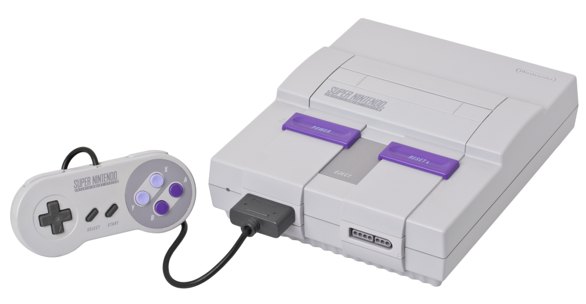

Super Nitendo
R$500
O Super Nintendo Entertainment System (Super NES, SNES ou Super Nintendo) é um console de videogame de 16 bits
desenvolvido pela Nintendo que foi lançado em 1990 no Japão, 1991 nos Estados Unidos, 1992 na Europa e Australásia
(Oceania) e América do Sul em 1993.